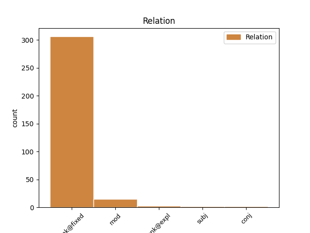
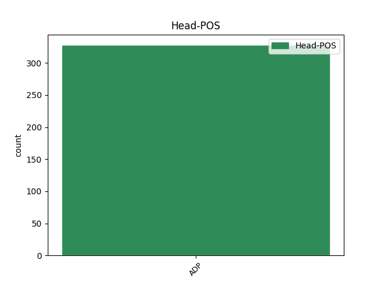
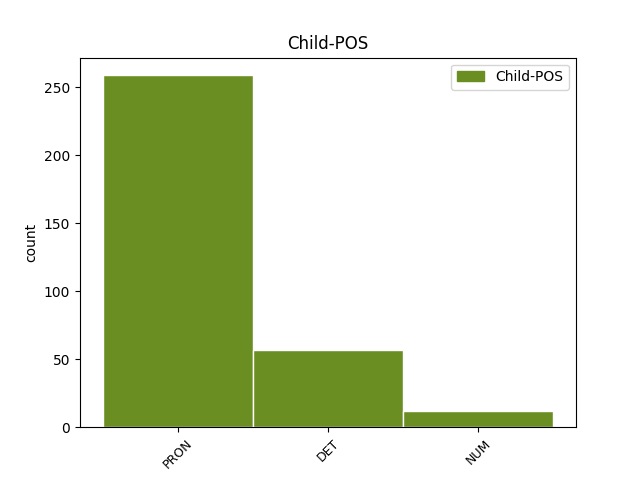

Distribution of features within this leaf



Agreement Rules sorted by frequency.
- When the dependent token is the unk@expl(unk@expl) of the head token, and the head token is ADP and the dependent token is PRON.
1 Pentru _ _ _ _ 0 _ _ _
2 detalii _ _ _ _ 0 _ _ _
3 despre _ _ _ _ 0 _ _ _
4 cum _ _ _ _ 0 _ _ _
5 se _ _ _ _ 0 _ _ _
6 prepară _ _ _ _ 0 _ _ _
7 suspensia _ _ _ _ 0 _ _ _
8 orală _ _ _ _ 0 _ _ _
9 și _ _ _ _ 0 _ _ _
10 despre despre ADP Spsa AdpType=Prep|Case=Acc 0 _ _ _
11 cum _ _ _ _ 0 _ _ _
12 se sine PRON Px3--a--------w Case=Acc|Person=3|PronType=Prs|Reflex=Yes|Strength=Weak 10 unk@expl _ _
13 măsoară _ _ _ _ 0 _ _ _
14 și _ _ _ _ 0 _ _ _
15 cum _ _ _ _ 0 _ _ _
16 se _ _ _ _ 0 _ _ _
17 administrează _ _ _ _ 0 _ _ _
18 medicamentul _ _ _ _ 0 _ _ _
19 , _ _ _ _ 0 _ _ _
20 vezi _ _ _ _ 0 _ _ _
21 pct. _ _ _ _ 0 _ _ _
22 3 _ _ _ _ 0 _ _ _
23 . _ _ _ _ 0 _ _ _
1 În _ _ _ _ 0 _ _ _
2 astfel _ _ _ _ 0 _ _ _
3 de _ _ _ _ 0 _ _ _
4 împrejurări _ _ _ _ 0 _ _ _
5 dictatoriale _ _ _ _ 0 _ _ _
6 , _ _ _ _ 0 _ _ _
7 este _ _ _ _ 0 _ _ _
8 de _ _ _ _ 0 _ _ _
9 la la ADP Spsa AdpType=Prep|Case=Acc 0 _ _ _
10 sine sine PRON Px3--a--------s Case=Acc|Person=3|PronType=Prs|Reflex=Yes|Strength=Strong 9 unk@fixed _ _
11 înțeles _ _ _ _ 0 _ _ _
12 că _ _ _ _ 0 _ _ _
13 năzdrăvăniile _ _ _ _ 0 _ _ _
14 noastre _ _ _ _ 0 _ _ _
15 scăzuseră _ _ _ _ 0 _ _ _
16 simțitor _ _ _ _ 0 _ _ _
17 și _ _ _ _ 0 _ _ _
18 , _ _ _ _ 0 _ _ _
19 cu _ _ _ _ 0 _ _ _
20 timpul _ _ _ _ 0 _ _ _
21 , _ _ _ _ 0 _ _ _
22 se _ _ _ _ 0 _ _ _
23 reduseseră _ _ _ _ 0 _ _ _
24 aproape _ _ _ _ 0 _ _ _
25 la _ _ _ _ 0 _ _ _
26 zero _ _ _ _ 0 _ _ _
27 . _ _ _ _ 0 _ _ _
Disagree Examples:
1 Știa _ _ _ _ 0 _ _ _
2 și _ _ _ _ 0 _ _ _
3 de de ADP Spsa AdpType=Prep|Case=Acc 0 _ _ _
4 ce ce PRON Pw3--r Case=Acc,Nom|Person=3|PronType=Int,Rel 3 unk@fixed _ SpaceAfter=No
5 . _ _ _ _ 0 _ _ _
1 Aparatul _ _ _ _ 0 _ _ _
2 care _ _ _ _ 0 _ _ _
3 se _ _ _ _ 0 _ _ _
4 numea _ _ _ _ 0 _ _ _
5 tele-ecran _ _ _ _ 0 _ _ _
6 , _ _ _ _ 0 _ _ _
7 putea _ _ _ _ 0 _ _ _
8 fi _ _ _ _ 0 _ _ _
9 dat _ _ _ _ 0 _ _ _
10 mai _ _ _ _ 0 _ _ _
11 încet _ _ _ _ 0 _ _ _
12 , _ _ _ _ 0 _ _ _
13 dar _ _ _ _ 0 _ _ _
14 nu _ _ _ _ 0 _ _ _
15 aveai _ _ _ _ 0 _ _ _
16 cum _ _ _ _ 0 _ _ _
17 să _ _ _ _ 0 _ _ _
18 -l _ _ _ _ 0 _ _ _
19 închizi _ _ _ _ 0 _ _ _
20 de de ADP Spsa AdpType=Prep|Case=Acc 0 _ _ _
21 tot tot PRON Pi3msr Case=Acc,Nom|Gender=Masc|Number=Sing|Person=3|PronType=Ind 20 unk@fixed _ SpaceAfter=No
22 . _ _ _ _ 0 _ _ _
1 Sigur _ _ _ _ 0 _ _ _
2 că _ _ _ _ 0 _ _ _
3 puțin _ _ _ _ 0 _ _ _
4 probabil _ _ _ _ 0 _ _ _
5 așa _ _ _ _ 0 _ _ _
6 ceva _ _ _ _ 0 _ _ _
7 dar _ _ _ _ 0 _ _ _
8 ori _ _ _ _ 0 _ _ _
9 de de ADP Spsa AdpType=Prep|Case=Acc 0 _ _ _
10 câte cât DET Dw3fpr Case=Acc,Nom|Gender=Fem|Number=Plur|Person=3|PronType=Int,Rel 9 unk@fixed _ _
11 ori _ _ _ _ 0 _ _ _
12 fata _ _ _ _ 0 _ _ _
13 se _ _ _ _ 0 _ _ _
14 afla _ _ _ _ 0 _ _ _
15 prin _ _ _ _ 0 _ _ _
16 apropierea _ _ _ _ 0 _ _ _
17 lui _ _ _ _ 0 _ _ _
18 , _ _ _ _ 0 _ _ _
19 el _ _ _ _ 0 _ _ _
20 simțea _ _ _ _ 0 _ _ _
21 , _ _ _ _ 0 _ _ _
22 în _ _ _ _ 0 _ _ _
23 continuare _ _ _ _ 0 _ _ _
24 , _ _ _ _ 0 _ _ _
25 o _ _ _ _ 0 _ _ _
26 neliniște _ _ _ _ 0 _ _ _
27 ciudată _ _ _ _ 0 _ _ _
28 care _ _ _ _ 0 _ _ _
29 avea _ _ _ _ 0 _ _ _
30 în _ _ _ _ 0 _ _ _
31 ea _ _ _ _ 0 _ _ _
32 și _ _ _ _ 0 _ _ _
33 teamă _ _ _ _ 0 _ _ _
34 și _ _ _ _ 0 _ _ _
35 dușmănie _ _ _ _ 0 _ _ _
36 . _ _ _ _ 0 _ _ _
1 Ori _ _ _ _ 0 _ _ _
2 de de ADP Spsa AdpType=Prep|Case=Acc 0 _ _ _
3 câte cât DET Dw3fpr Case=Acc,Nom|Gender=Fem|Number=Plur|Person=3|PronType=Int,Rel 2 unk@fixed _ _
4 ori _ _ _ _ 0 _ _ _
5 vedea _ _ _ _ 0 _ _ _
6 figura _ _ _ _ 0 _ _ _
7 lui _ _ _ _ 0 _ _ _
8 Goldstein _ _ _ _ 0 _ _ _
9 , _ _ _ _ 0 _ _ _
10 îl _ _ _ _ 0 _ _ _
11 încercau _ _ _ _ 0 _ _ _
12 sentimente _ _ _ _ 0 _ _ _
13 amestecate _ _ _ _ 0 _ _ _
14 . _ _ _ _ 0 _ _ _
1 Îl _ _ _ _ 0 _ _ _
2 insultase _ _ _ _ 0 _ _ _
3 pe _ _ _ _ 0 _ _ _
4 Fratele _ _ _ _ 0 _ _ _
5 cel _ _ _ _ 0 _ _ _
6 Mare _ _ _ _ 0 _ _ _
7 , _ _ _ _ 0 _ _ _
8 denunțase _ _ _ _ 0 _ _ _
9 dictatura _ _ _ _ 0 _ _ _
10 Partidului _ _ _ _ 0 _ _ _
11 , _ _ _ _ 0 _ _ _
12 ceruse _ _ _ _ 0 _ _ _
13 încheierea _ _ _ _ 0 _ _ _
14 imediată _ _ _ _ 0 _ _ _
15 a _ _ _ _ 0 _ _ _
16 păcii _ _ _ _ 0 _ _ _
17 cu _ _ _ _ 0 _ _ _
18 Eurasia _ _ _ _ 0 _ _ _
19 , _ _ _ _ 0 _ _ _
20 solicitase _ _ _ _ 0 _ _ _
21 libertatea _ _ _ _ 0 _ _ _
22 cuvântului _ _ _ _ 0 _ _ _
23 , _ _ _ _ 0 _ _ _
24 libertatea _ _ _ _ 0 _ _ _
25 presei _ _ _ _ 0 _ _ _
26 , _ _ _ _ 0 _ _ _
27 libertatea _ _ _ _ 0 _ _ _
28 de _ _ _ _ 0 _ _ _
29 întrunire _ _ _ _ 0 _ _ _
30 , _ _ _ _ 0 _ _ _
31 libertatea _ _ _ _ 0 _ _ _
32 de _ _ _ _ 0 _ _ _
33 gândire _ _ _ _ 0 _ _ _
34 , _ _ _ _ 0 _ _ _
35 zbierând _ _ _ _ 0 _ _ _
36 ca _ _ _ _ 0 _ _ _
37 un _ _ _ _ 0 _ _ _
38 isteric _ _ _ _ 0 _ _ _
39 despre _ _ _ _ 0 _ _ _
40 trădarea _ _ _ _ 0 _ _ _
41 Revoluției _ _ _ _ 0 _ _ _
42 - _ _ _ _ 0 _ _ _
43 totul tot PRON Pi3msr Case=Acc,Nom|Gender=Masc|Number=Sing|Person=3|PronType=Ind 44 subj _ _
44 într- întru ADP Spsay AdpType=Prep|Case=Acc|Variant=Short 0 _ _ _
45 o _ _ _ _ 0 _ _ _
46 vorbire _ _ _ _ 0 _ _ _
47 polisilabică _ _ _ _ 0 _ _ _
48 rapidă _ _ _ _ 0 _ _ _
49 , _ _ _ _ 0 _ _ _
50 ca _ _ _ _ 0 _ _ _
51 un _ _ _ _ 0 _ _ _
52 fel _ _ _ _ 0 _ _ _
53 de _ _ _ _ 0 _ _ _
54 parodiere _ _ _ _ 0 _ _ _
55 a _ _ _ _ 0 _ _ _
56 stilului _ _ _ _ 0 _ _ _
57 obișnuit _ _ _ _ 0 _ _ _
58 al _ _ _ _ 0 _ _ _
59 oratorilor _ _ _ _ 0 _ _ _
60 Partidului _ _ _ _ 0 _ _ _
61 , _ _ _ _ 0 _ _ _
62 care _ _ _ _ 0 _ _ _
63 conținea _ _ _ _ 0 _ _ _
64 chiar _ _ _ _ 0 _ _ _
65 și _ _ _ _ 0 _ _ _
66 cuvinte _ _ _ _ 0 _ _ _
67 din _ _ _ _ 0 _ _ _
68 Nouvorbă _ _ _ _ 0 _ _ _
69 ; _ _ _ _ 0 _ _ _
70 de _ _ _ _ 0 _ _ _
71 fapt _ _ _ _ 0 _ _ _
72 mult _ _ _ _ 0 _ _ _
73 mai _ _ _ _ 0 _ _ _
74 multe _ _ _ _ 0 _ _ _
75 asemenea _ _ _ _ 0 _ _ _
76 cuvinte _ _ _ _ 0 _ _ _
77 decât _ _ _ _ 0 _ _ _
78 folosea _ _ _ _ 0 _ _ _
79 oricare _ _ _ _ 0 _ _ _
80 membru _ _ _ _ 0 _ _ _
81 al _ _ _ _ 0 _ _ _
82 Partidului _ _ _ _ 0 _ _ _
83 în _ _ _ _ 0 _ _ _
84 viața _ _ _ _ 0 _ _ _
85 de _ _ _ _ 0 _ _ _
86 toate _ _ _ _ 0 _ _ _
87 zilele _ _ _ _ 0 _ _ _
88 . _ _ _ _ 0 _ _ _